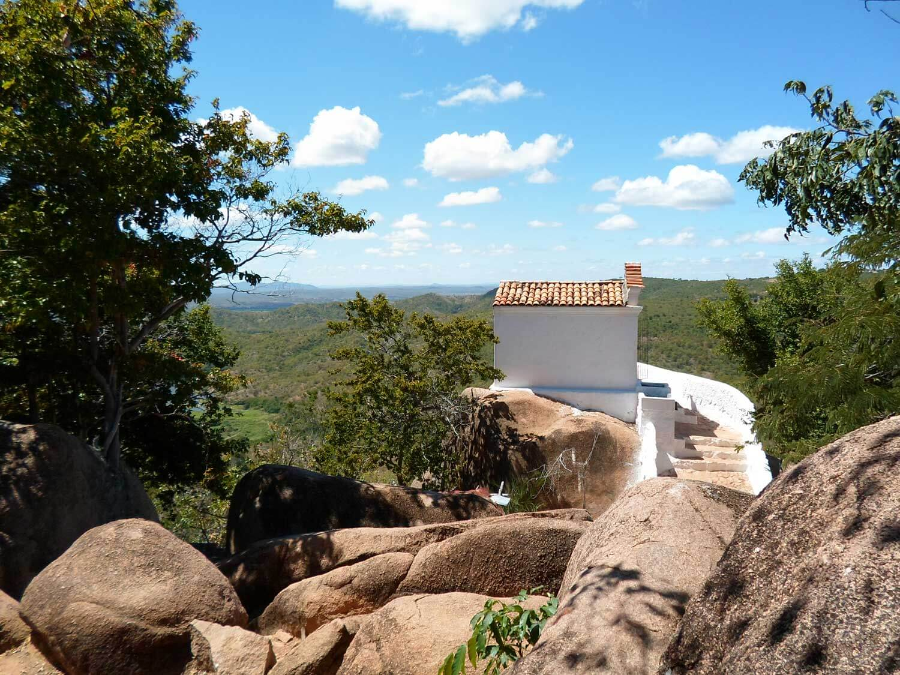
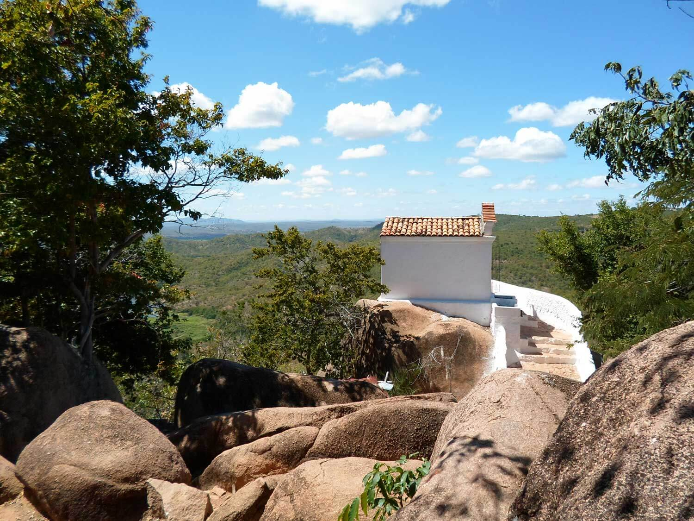
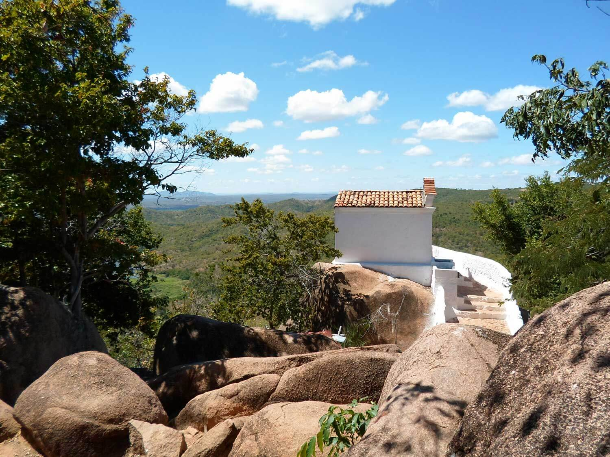

Vídeo, Fotos e Sua Localização

 

O Santo Sepulcro está localizada no Juazeiro do Norte, Ceará. Para mais detalhes, veja o mapa abaixo:
Trilha de 3 km usada por romeiros, peregrinos, pagadores de promessas, turistas e penitentes no geossítio da Coluna do Horto. É um campo de rochas gigantes onde se deixam ex-votos, fitas, retratos, imagens de santos e tótens de pedras. Lá, no alto da montanha, em Juazeiro do Norte, está a estátua de Padre Cícero.

O Santo Sepulcro está localizada no Juazeiro do Norte, Ceará. Para mais detalhes, veja o mapa abaixo: